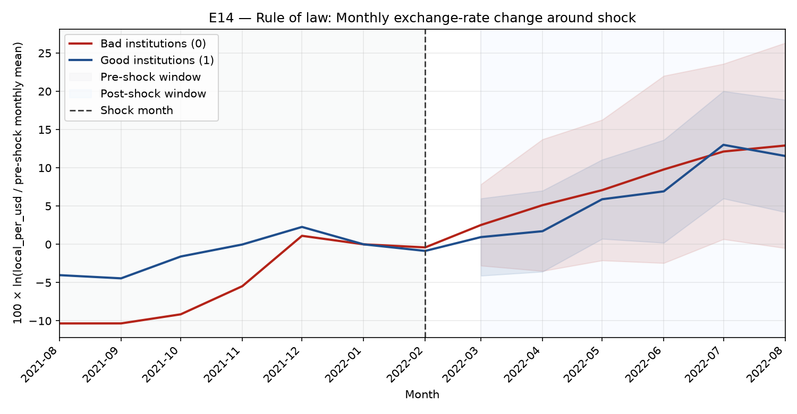
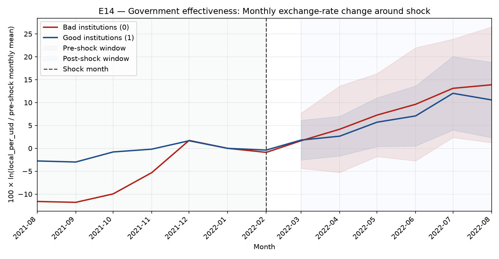

This report replicates a preliminary DiD design at monthly frequency using cleaned data, with new shock-country episodes from cleaned/oil_related_geopolitical_shocks_imf.xlsx.
doc/how GRP affect FX and capital flow.pdf): monthly GPR context, exchange-rate channel, and macro/global controls.100 × ln(FX[t+1] / FX[t-1]). The pre-shock row is 0 and the post-shock row is this change.t-1 (before shock) and month t+1 (right after shock) are used.t-6 to t+6), normalized by t-1 for each country.rl) and Government Effectiveness (ge).Y = α + δ·Treat + γ·Post + θ·(Treat×Post) + β'Controls + ε; θ is the DiD effect.| Episode | Shock month | Dimension | N obs | N countries | θ (Treat×Post) | SE | t | p | 95% CI | SE type | k params |
|---|---|---|---|---|---|---|---|---|---|---|---|
| E14 | 2022-02 | Government effectiveness | 16 | 8 | 1.3095 | 5.6731 | 0.231 | 0.8241 | [-12.1053, 14.7243] | cluster(country) | 11 |
| E14 | 2022-02 | Rule of law | 16 | 8 | -0.6435 | 6.0267 | -0.107 | 0.9180 | [-14.8943, 13.6073] | cluster(country) | 11 |
Significance stars: *** p<0.01, ** p<0.05, * p<0.10.
| Episode | Dimension | Problem / limitation |
|---|---|---|
| E03 | Rule of law | Insufficient observations after filtering (N <= number of parameters). Missing lagged controls for: Egypt (inflation_l1, policy_rate_l1); Thailand (policy_rate_l1); Turkey (inflation_l1, policy_rate_l1). |
| E03 | Government effectiveness | Insufficient observations after filtering (N <= number of parameters). Missing lagged controls for: Egypt (inflation_l1, policy_rate_l1); Thailand (policy_rate_l1); Turkey (inflation_l1, policy_rate_l1). |
| E09 | Rule of law | Insufficient observations after filtering (N <= number of parameters). Missing lagged controls for: Egypt (policy_rate_l1). |
| E09 | Government effectiveness | Insufficient observations after filtering (N <= number of parameters). Missing lagged controls for: Egypt (policy_rate_l1). |
| E13 | Rule of law | Insufficient observations after filtering (N <= number of parameters). |
| E13 | Government effectiveness | Insufficient observations after filtering (N <= number of parameters). |
| E16 | Rule of law | Insufficient observations after filtering (N <= number of parameters). Missing lagged controls for: Egypt (policy_rate_l1). |
| E16 | Government effectiveness | Insufficient observations after filtering (N <= number of parameters). Missing lagged controls for: Egypt (policy_rate_l1). |
| E17 | Rule of law | Insufficient observations after filtering (N <= number of parameters). Missing lagged controls for: Egypt (policy_rate_l1). |
| E17 | Government effectiveness | Insufficient observations after filtering (N <= number of parameters). Missing lagged controls for: Egypt (policy_rate_l1). |
| E19 | Rule of law | No usable monthly observations. Missing lagged controls for: Egypt (financial_development_l1, policy_rate_l1); Mexico (financial_development_l1); Philippines (financial_development_l1); Thailand (financial_development_l1). |
| E19 | Government effectiveness | No usable monthly observations. Missing lagged controls for: Egypt (financial_development_l1, policy_rate_l1); Mexico (financial_development_l1); Philippines (financial_development_l1); Thailand (financial_development_l1). |
| E20 | Rule of law | No usable monthly observations. Missing lagged controls for: Egypt (financial_development_l1); Hungary (financial_development_l1); India (financial_development_l1); Mexico (financial_development_l1); Philippines (financial_development_l1); Thailand (financial_development_l1); Turkey (financial_development_l1). |
| E20 | Government effectiveness | No usable monthly observations. Missing lagged controls for: Egypt (financial_development_l1); Hungary (financial_development_l1); India (financial_development_l1); Mexico (financial_development_l1); Philippines (financial_development_l1); Thailand (financial_development_l1); Turkey (financial_development_l1). |
Shock month: 2003-03 | Shock type: Supply disruption / major oil crisis
FX months used: before = 2003-02, after = 2003-04
Selected countries (workbook): Chile, Egypt, Mexico, Philippines, Poland, Thailand, Turkey, Venezuela
Shock month: 2011-03 | Shock type: Supply disruption / major oil crisis
FX months used: before = 2011-02, after = 2011-04
Selected countries (workbook): Egypt, South Africa
Shock month: 2020-01 | Shock type: Supply-risk shock
FX months used: before = 2019-12, after = 2020-02
Selected countries (workbook): Egypt
Shock month: 2022-02 | Shock type: Supply disruption / major oil crisis
FX months used: before = 2022-01, after = 2022-03
Selected countries (workbook): Chile, Egypt, Hungary, India, Indonesia, Malaysia, Peru, Poland, South Africa, Turkey
N=16 monthly observations across 8 countries. θ=-0.6435 (SE=6.0267, p=0.9180).
Group-period counts (control/pre, control/post, treated/pre, treated/post): 4, 4, 4, 4.
Pre-shock WGI year for grouping: 2022 (selected-country mean = -0.1329).

Trend chart window: 2021-08 to 2022-08. Shaded area shows 95% confidence bands only for months after the shock (normal approximation).
N=16 monthly observations across 8 countries. θ=1.3095 (SE=5.6731, p=0.8241).
Group-period counts (control/pre, control/post, treated/pre, treated/post): 4, 4, 4, 4.
Pre-shock WGI year for grouping: 2022 (selected-country mean = 0.2842).

Trend chart window: 2021-08 to 2022-08. Shaded area shows 95% confidence bands only for months after the shock (normal approximation).
Shock month: 2023-10 | Shock type: Supply-risk shock
FX months used: before = 2023-09, after = 2023-11
Selected countries (workbook): Egypt, Hungary, Indonesia, Malaysia, Philippines, Thailand
Shock month: 2024-04 | Shock type: Supply-risk shock
FX months used: before = 2024-03, after = 2024-05
Selected countries (workbook): Egypt, Philippines, South Africa, Thailand
Shock month: 2025-06 | Shock type: Supply-risk shock
FX months used: before = 2025-05, after = 2025-07
Selected countries (workbook): Egypt, Malaysia, Mexico, Philippines, Thailand
Shock month: 2026-02 | Shock type: Supply disruption / major oil crisis
FX months used: before = 2026-01, after = 2026-03
Selected countries (workbook): Colombia, Egypt, Hungary, India, Malaysia, Mexico, Philippines, Thailand, Turkey